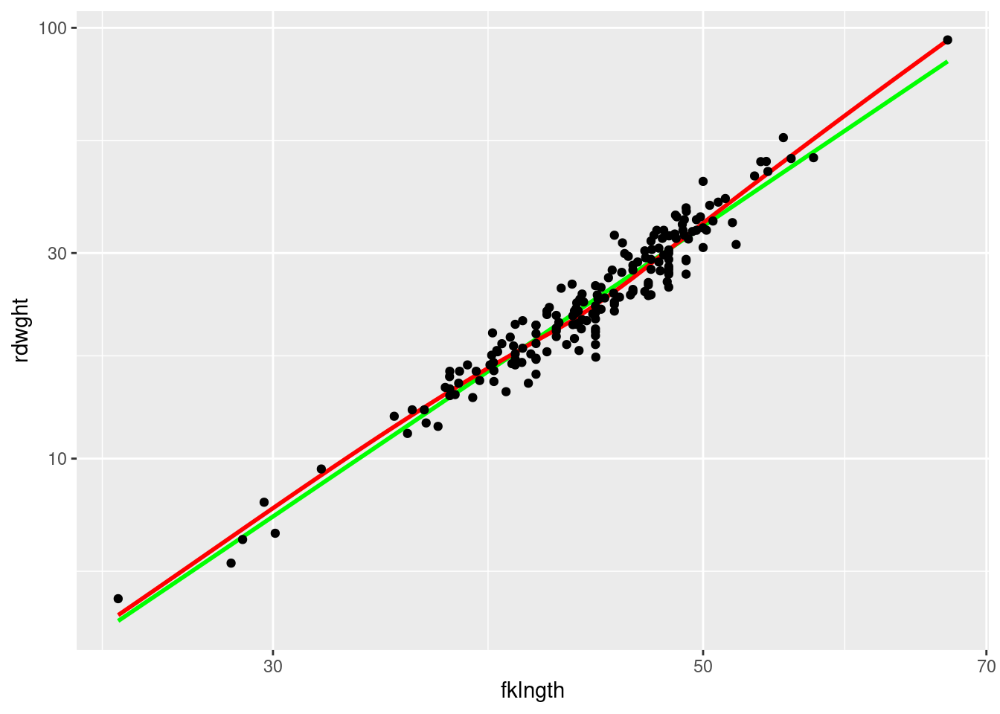
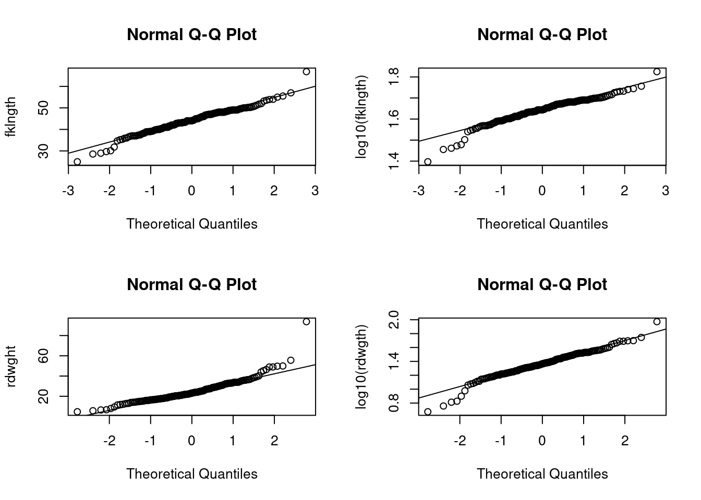
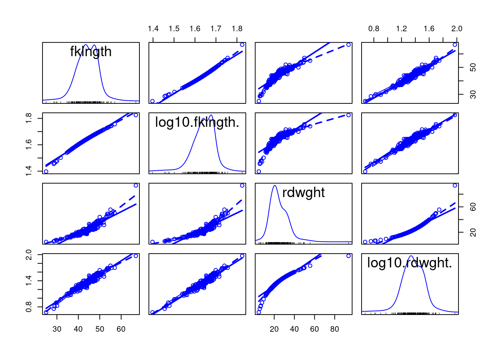
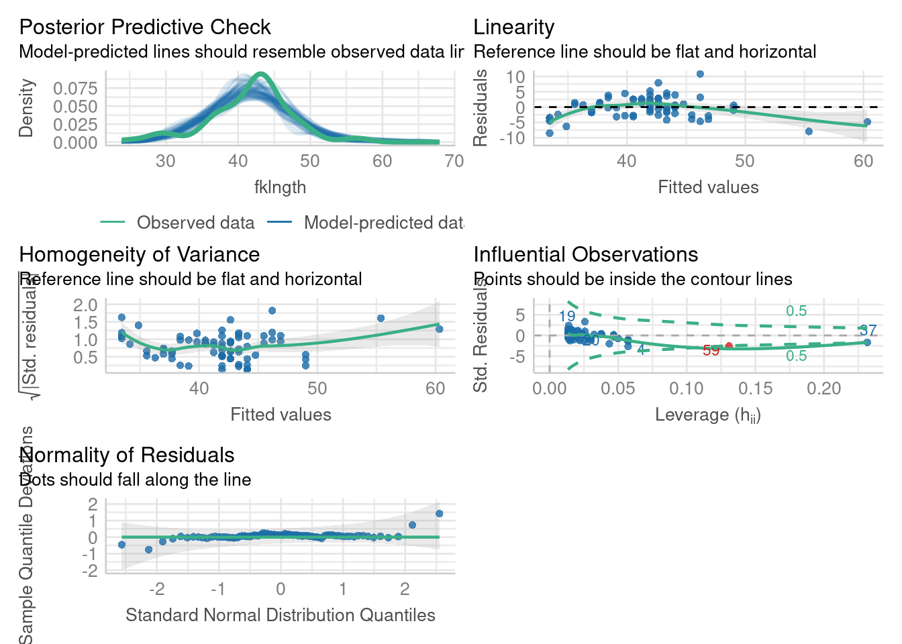
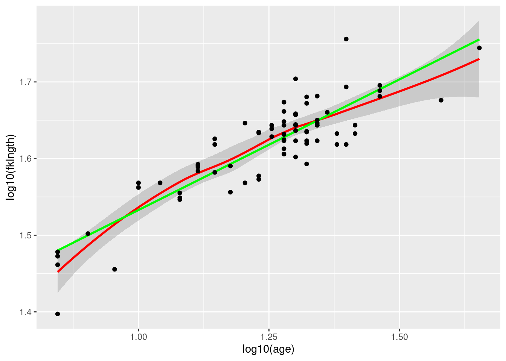
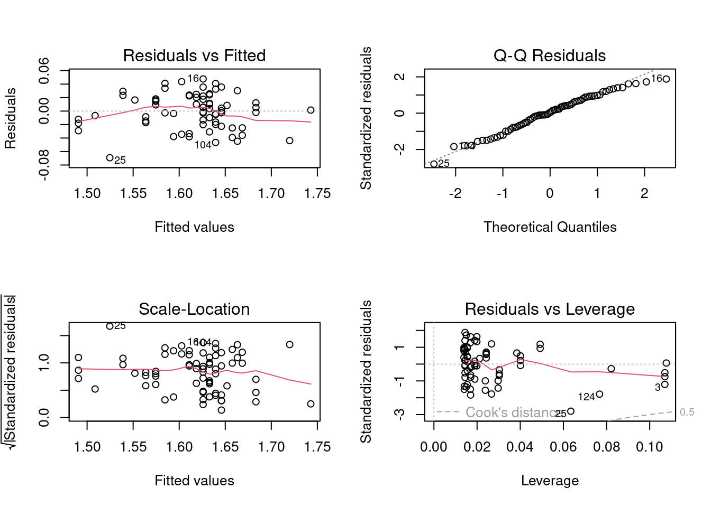
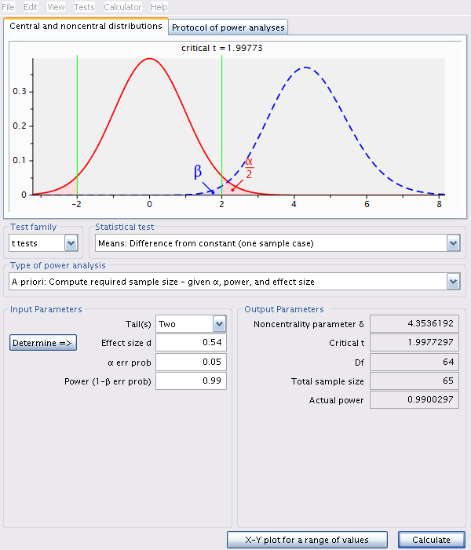

9 Corrélation et régression linéaire simple
Après avoir complété cet exercice de laboratoire, vous devriez être en mesure de :
- Utiliser R pour produire un diagramme de dispersion pour illus- trer la relation entre deux variables avec trace lowess
- Utiliser R pour faire des transformations simples
- Utiliser R pour calculer le coefficient de corrélation de Pearson entre deux variables et en évaluer sa signification statistique
- Utiliser R pour calculer la corrélation de rang entre des paires de variables avec le r de Spearman et le tau de Kendall
- Utiliser R pour évaluer la signification de corrélations dans une matrice de corrélation en utilisant les probabilités ajustées par la méthode de Bonferroni.
- Utiliser R pour faire une régression linéaire simple.
- Utiliser R pour évaluer si un ensemble de données remplit les conditions d’application d’une analyse de régression simple.
- Quantifier la taille de l’effet d’une régression simple et effectuer une analyse de puissance avec G*Power.
9.1 Extensions R et données requises pour le labo
Ce laboratoire nécessite:
- les paquets R:
- car
- lmtest
- boot
- pwr
- ggplot
- les fichiers de données
- sturgeon.csv
Il ne faut pas oublier de charge les extensions avec library() et de les installer au besoin avec install.packages() Pour les données, il faut les lire et les assigner à un objet R.
Notez que la ligne de code pour lire les données considère que le fichier de données se trouve dans un dossier data au sein de votre répertoire de travail. Si ce n’est pas le cas veuillez ajuster la ligne de commande.
9.2 Diagrammes de dispersion
Les analyses de corrélation et de régression devraient toujours commencer par un examen des données.C’est une étape critique qui sert à évaluer si ce type d’analyse est approprié pour un ensemble de données. Supposons que nous sommes intéressés à évaluer si la longueur d’esturgeons mâles dans la région de The Pas covarie avec leur poids. Pour répondre à cette question, regardons d’abord la corrélation entre la longueur et le poids. Souvenez-vous qu’une des conditions d’application de l’analyse de corrélation est que la relation entre les deux variables est linéaire. Pour évaluer cela, commençons par faire un diagramme de dispersion.
- Les données sur les esturgeons son disponibles dans le fichier
sturgeon.csv. Après avoir chargé les données dnas un objetsturgeon, faites un diagramme de dispersion avec une droite de régression et une courbe LOWESS de la longueur en fonction du poids.
'data.frame': 186 obs. of 9 variables:
$ fklngth : num 37 50.2 28.9 50.2 45.6 ...
$ totlngth: num 40.7 54.1 31.3 53.1 49.5 ...
$ drlngth : num 23.6 31.5 17.3 32.3 32.1 ...
$ rdwght : num 15.95 NA 6.49 NA 29.92 ...
$ age : int 11 24 7 23 20 23 20 7 23 19 ...
$ girth : num 40.5 53.5 31 52.5 50 54.2 48 28.5 44 39 ...
$ sex : chr "MALE" "FEMALE" "MALE" "FEMALE" ...
$ location: chr "THE_PAS" "THE_PAS" "THE_PAS" "THE_PAS" ...
$ year : int 1978 1978 1978 1978 1978 1978 1978 1978 1978 1978 ...mygraph <- ggplot(
data = sturgeon[!is.na(sturgeon$rdwght), ], # source of data
aes(x = fklngth, y = rdwght)
)
# plot data points, regression, loess trace
mygraph <- mygraph +
stat_smooth(method = lm, se = FALSE, color = "green") + # add linear regression, but no SE shading
stat_smooth(color = "red", se = FALSE) + # add loess
geom_point() # add data points
mygraph # display graph
- Est-ce que la dispersion des points suggère une bonne corrélation entre les deux variables? Est-ce que la relation semble linéaire?
Ce graphique suggère une tendance plus curvilinéaire que linéaire. Malgré tout, il semble y avoir une forte corrélation entre les deux variables.
- Refaites le diagramme de dispersion avec des axes logarithmiques.
# apply log transformation on defined graph
mygraph + scale_x_log10() + scale_y_log10()
Comparez les diagrammes de dispersion avant et après transformation (Figures @ref(fig:stur-2) et @ref(fig:stur-log)). Comme l’analyse de corrélation présuppose une relation linéaire entre les variables, on devrait donc privilégier l’analyse sur les données log-transformées.
9.3 Transformations et le coefficient de corrélation
Une autre condition préalable à l’analyse de corrélation est que les deux variables concernées suivent une distribution normale bidimensionnelle. On peut aisément vérifier la normalité de chacune des 2 variables séparément tel que décrit dans le laboratoire précédent. Si les deux variables sont normalement distribuées, on présume généralement qu’elles suivent une distribution normale bidimensionnelle lorsqu’analysées simultanément (notez que ce n’est pas toujours le cas cependant).
- Examinez la distribution des quatre variables (les deux variables originales et les variables transformées). Que concluez-vous de l’inspection visuelle de ces graphiques ?
Les figures ci-dessous sont les diagrammes de probabilité (qqplot()). Le code pour produire des graphiques multiples sur une page, comme on voit ci-dessous, est:
par(mfrow = c(2, 2)) # divise le graphique en 4 sections
qqnorm(sturgeon$fklngth, ylab = "fklngth")
qqline(sturgeon$fklngth)
qqnorm(log10(sturgeon$fklngth), ylab = "log10(fklngth)")
qqline(log10(sturgeon$fklngth))
qqnorm(sturgeon$rdwght, ylab = "rdwght")
qqline(sturgeon$rdwght)
qqnorm(log10(sturgeon$rdwght), ylab = "log10(rdwgth)")
qqline(log10(sturgeon$rdwght))
Il n’y a pas grand-chose à redire: aucune des distributions n’est parfaitement normale, mais les déviations semblent mineures.
- Générez une matrice de graphiques de dispersion améliorés en utilisant la commande
scatterplotMatrixde la librairiecar.
scatterplotMatrix(
~ fklngth + log10(fklngth) + rdwght + log10(rdwght),
data = sturgeon,
smooth = TRUE, diagonal = "density"
)Warning in applyDefaults(diagonal, defaults = list(method = "adaptiveDensity"),
: unnamed diag arguments, will be ignored
- Ensuite, calculez le coefficient de corrélation de Pearson entre chaque paire (variables originales et logtransformées) en utilisant la commande
cor(). Avant de commencer, on va cependant ajouter les variables transformées au tableau de données sturgeon:
Vous pouvez ensuite obtenir la matrice de corrélation par:
Fréquemment, il y a des données manquantes dans un échantillon. En choisissant use="complete.obs", toutes les lignes du fichier pour lesquelles les variables ne sont pas toutes mesurées sont éliminées. Dans ce cas, toutes les corrélations seront calculées avec le même nombre de cas. Par contre, en utilisant use="pairwise.complete.obs", R élimine une observation que lorsqu’un des deux membres de la paire a une valeur manquante. Dans ce cas, si les données manquantes pour différentes variables se retrouvent dans un groupe différent d’observation, les corrélations ne seront pas nécessairement calculées sur le même nombre de cas ni sur le même sous-ensemble de cas. En général, vous devriez utiliser l’option use="complete.obs" à moins que vous ayez un très grand nombre de données manquantes et que cette façon de procéder élimine la plus grande partie de vos observations.
Pourquoi la corrélation entre les variables originales est-elle la plus faible des trois ?
fklngth lfklngth lrdwght rdwght
fklngth 1.0000000 0.9921435 0.9645108 0.9175435
lfklngth 0.9921435 1.0000000 0.9670139 0.8756203
lrdwght 0.9645108 0.9670139 1.0000000 0.9265513
rdwght 0.9175435 0.8756203 0.9265513 1.0000000Il y a plusieurs choses à noter ici.
- Premièrement, la corrélation entre la longueur à la fourche et le poids rond est élevée, peu importe la transformation: les poissons lourds ont tendance à être longs.
- Deuxièmement, la corrélation est plus forte pour les données transformées que pour les données brutes.
Pourquoi? Parce que le coefficient de corrélation est inversement proportionnel au bruit autour de la relation linéaire. Si la relation est curvilinéaire (comme dans le cas des données non transformées), le bruit est plus grand que si la relation est parfaitement linéaire. Par conséquent, la corrélation est plus faible.
9.4 Matrices de corrélations et correction de Bonferroni
Une pratique courante est d’examiner une matrice de corrélation à la recherche des associations significatives. Comme exemple, essayons de tester si la corrélation entre lfklngth et rdwght est significative (c’est le plus faible coefficient de corrélation de cette matrice).
- Estimer la correlation entre la longueur (fklngth) et le poids (rdwght) des esturgeons:
cor.test(
sturgeon$lfklngth, sturgeon$rdwght,
alternative = "two.sided",
method = "pearson"
)
Pearson's product-moment correlation
data: sturgeon$lfklngth and sturgeon$rdwght
t = 24.322, df = 180, p-value < 2.2e-16
alternative hypothesis: true correlation is not equal to 0
95 percent confidence interval:
0.8367345 0.9057199
sample estimates:
cor
0.8756203 On voit ici que la corrélation est hautement significative (\(p < 2.2e-16\)),ce qui n’est pas surprenant étant donné la valeur du coefficient de corrélation (0.8756). Il est important de réaliser que si une matrice contient un grand nombre de corrélations, il n’est pas surprenant d’en trouver au moins une qui soit “significative”. En effet, on s’attend à en trouver 5% en moyenne lorsqu’il n’y a en fait aucune corrélation entre les paires de moyennes. Une façon de corriger pour cette tendance est d’ajuster le niveau \(\alpha\) critique auquel on attribue une signification statistique en divisant \(\alpha\) par le nombre \(k\) de corrélations qui sont examinées : \(\alpha' =
\alpha / k\) (ajustement de Bonferroni). Si initialement \(\alpha = 0.05\) et qu’il y a 10 corrélations qui sont examinées, alors \(\alpha'= 0.005\). Donc, afin de rejeter l’hypothèse nulle, la valeur de p devra être plus petite que \(\alpha'\), en l’occurrence 0.005. Dans l’exemple qui précède, on devrait donc ajuster \(\alpha\) critique en divisant par le nombre total de corrélations dans la matrice (6 dans ce cas, donc \(\alpha'=0.00833\)). Cette correction modifie-t-elle votre conclusion quant à la corrélation entre lkfl et rdwght?
9.5 Corrélations non paramétriques: r de Spearman et \(\tau\) de Kendall
L’analyse faite à la section précédente avec les esturgeons suggère que l’une des conditions préalables à l’analyse de corrélation, soit la distribution normale bidimensionnelle de données, pourrait ne pas être remplie pour fklngth et rdwght, ni pour les paires de variables transformées. La recherche d’une transformation appropriée peut parfois être difficile. Pire encore, pour certaines distributions il n’existe pas de transformation qui va normaliser les données. Dans ces cas-là, la meilleure option est de faire une analyse non paramétrique qui ne présume ni de la normalité ni de la linéarité. Ces analyses sont basées sur les rangs. Les deux plus communes sont le coefficient de rang de Spearman et le \(\tau\) (tau) de Kendall.
- Dans R, testez la corrélation entre
fklngthetrdwghten utilisant Spearman et Kendall’s .
cor.test(
sturgeon$lfklngth, sturgeon$rdwght,
alternative = "two.sided",
method = "spearman"
)Warning in cor.test.default(sturgeon$lfklngth, sturgeon$rdwght, alternative =
"two.sided", : Cannot compute exact p-value with ties
Spearman's rank correlation rho
data: sturgeon$lfklngth and sturgeon$rdwght
S = 47971, p-value < 2.2e-16
alternative hypothesis: true rho is not equal to 0
sample estimates:
rho
0.9522546 cor.test(
sturgeon$lfklngth, sturgeon$rdwght,
alternative = "two.sided",
method = "kendall"
)
Kendall's rank correlation tau
data: sturgeon$lfklngth and sturgeon$rdwght
z = 16.358, p-value < 2.2e-16
alternative hypothesis: true tau is not equal to 0
sample estimates:
tau
0.8208065 Comparer les résultats de cette analyse à l’analyse paramétrique. Pourquoi y-a-t’il une différence ?
Calculez les corrélations non paramétriques sur les paires de variables transformées. Vous devriez voir tout de suite que les corrélations des données transformées et non transformées sont identiques puisque dans les deux cas la corrélation est calculée à partir des rangs qui ne sont pas affectés par la transformation.
Notez que les corrélations obtenues avec le tau de Kendall (0.820) sont plus faibles que celles du coefficient de Spearman (0.952). Le tau de Kendall pondère un peu plus les grandes différences entre les rangs alors que le coefficient de Spearman donne le même poids à chaque paire d’observations. En général, on préfère le tau de Kendall lorsqu’il y a plus d’incertitude quant aux rangs qui sont près les uns des autres.
Les esturgeons de cet échantillon ont été capturés à l’aide de filets et d’hameçons d’une taille fixe. Quel impact cette méthode de capture peut-elle avoir eu sur la forme de la distribution de fklngth et rdwght? Compte tenu de ces circonstances, l’analyse de corrélation est-elle appropriée ?
Rappelez-vous que l’analyse de corrélation présume aussi que chaque variable est échantillonnée aléatoirement. Dans le cas de nos esturgeons, ce n’est pas le cas: les hameçons appâtés et les filets ne capturent pas de petits esturgeons (et c’est pourquoi il n’y en a pas dans l’échantillon). Il faut donc réaliser que les coefficients de corrélation obtenus dans cette analyse ne reflètent pas nécessairement ceux de la population totale des esturgeons.
9.6 Régression linéaire simple
L’analyse de corrélation vise à décrire comment deux variables covarient. L’analyse de régression vise plutôt à produire un modèle permettant de prédire une variable (la variable dépendante) par l’autre (la variable indépendante).
Comme pour l’analyse de corrélation, on devrait commencer en examinant des graphiques. Puisque l’on est intéressé à quantifier la relation entre deux variables, un graphique de la variable dépendante (Y) en fonction de la variable indépendante (X) est tout à fait approprié.
- Le fichier
sturgeon.csvcontient des données d’un inventaire des esturgeons récoltés en 1978-1980 à Cumberland House en Saskatchewan et à The Pas au Manitoba. Faites un diagramme de dispersion defklngth(la variable dépendante) en fonction deage(la variable indépendante) pour les esturgeons mâles unqiuement et ajoutez-y une régression linéaire et une trace lowess. Que concluez-vous de ce diagramme de dispersion ?
sturgeon.male <- subset(sturgeon, subset = sex == "MALE")
mygraph <- ggplot(
data = sturgeon.male, # source of data
aes(x = age, y = fklngth)
) # aesthetics: y=fklngth, x=rdwght
# plot data points, regression, loess trace
mygraph <- mygraph +
stat_smooth(method = lm, se = FALSE, color = "green") + # add linear regression, but no SE shading
stat_smooth(color = "red") + # add loess
geom_point() # add data points
mygraph # display graph
Ce graphique suggère que la relation n’est pas linéaire.
Supposons que nous désirions estimer le taux de croissance des esturgeons mâles. Un estimé (peut-être pas terrible…) du taux de croissance peut être obtenu en calculant la pente de la régression de la longueur à la fourche sur l’âge.
Ajustons d’abord une régression avec la commande lm() et sauvons ces résultats dans un objet appelé RegModel.1.
RegModel.1 <- lm(fklngth ~ age, data = sturgeon.male)Rien n’apparait à l’écran, c’est normal ne vous inquiétez pas, tout a été sauvegardé en mémoire. Pour voir les résultats, tapez:
summary(RegModel.1)
Call:
lm(formula = fklngth ~ age, data = sturgeon.male)
Residuals:
Min 1Q Median 3Q Max
-8.4936 -2.2263 0.1849 1.7526 10.8234
Coefficients:
Estimate Std. Error t value Pr(>|t|)
(Intercept) 28.50359 1.16873 24.39 <2e-16 ***
age 0.70724 0.05888 12.01 <2e-16 ***
---
Signif. codes: 0 '***' 0.001 '**' 0.01 '*' 0.05 '.' 0.1 ' ' 1
Residual standard error: 3.307 on 73 degrees of freedom
(5 observations deleted due to missingness)
Multiple R-squared: 0.664, Adjusted R-squared: 0.6594
F-statistic: 144.3 on 1 and 73 DF, p-value: < 2.2e-16la sortie R donne:
-
Call:Le modèle qui a été ajusté et les données utilisées. -
Residuals:Un sommaire statistique des résidus autour du modèle estimé. -
Coefficients:Valeurs estimées des paramètres du modèle, erreurs-types, statistiques t et probabilités associées. -
Residual standard error:Racine carrée de la variance résiduelle. -
Multiple R-squared:Coefficient de détermination. Il correspond à la proportion de la variabilité de la variable dépendante qui peut être expliquée par la régression. -
Adjusted R-squared:Le R-carré ajusté tient compte du nombre de paramètres du modèle. Si vous voulez comparer différents modèles qui n’ont pas le même nombre de paramètres, c’est ce qu’il faut utiliser. -
F-statistic:C’est le test de signification omnibus du modèle. Dans le cas de la régression simple, il est équivalent au test sur la pente de la régression.
La régression estimée est donc:
\[ Fklngth = 28.50359 + 0.70724 * age\]
Étant donné la valeur significative du test de F ainsi que pour le test de t pour la pente de la droite, on rejette l’hypothèse nulle qu’il n’y a pas de relation entre la taille et l’âge.
9.6.1 Vérifier les conditions d’application de la régression
La régression simple de type I a quatre conditions préalables :
- il n’y a pas d’erreur de mesure sur la variable indépendante (X)
- la relation entre Y et X est linéaire
- les résidus sont normalement distribués
- la variance des résidus est constante pour toutes les valeurs de la variable indépendante
Procédons maintenant à l’examen post-mortem. La première condition est rarement remplie avec des données biologiques ; il y presque toujours de l’erreur sur X et sur Y. Cela veut dire qu’en général les pentes estimées sont biaisées, mais que les valeurs prédites ne le sont pas. Toutefois, si l’erreur de mesure sur X est petite par rapport à l’étendue des valeurs de X, le résultat de l’analyse n’est pas dramatiquement influencé. Par contre, si l’erreur de mesure est relativement grande (toujours par rapport à l’étendue des valeurs de X), la droite de régression obtenue par la régression de modèle I est un piètre estimé de la relation fonctionnelle entre X et Y. Dans ce cas, il est préférable de passer à la régression de modèle II, malheureusement au-delà du contenu de ce cours. Les autres conditions préalables à l’analyse de régression de modèle I peuvent cependant être vérifiées, ou du moins évaluées visuellement. La commande plot() permet de visualiser des graphiques diagnostiques pour des modèles linéaires.
La commande par() est utilisée pour dire à R de tracer 2 rangées et 2 colonnes de graphiques par page (il y a quatre graphiques diagnostiques qui sont générés automatiquement pour les modèles linéaires), et la commande las indique à R d’effectuer une rotation des légendes de l’axe des Y pour qu’elles soient perpendiculaires à l’axe (oui. Je sais. Rien de tout ça n’est évident.)
Vous obtiendrez:

- En haut à gauche, permet d’évaluer la linéarité, la normalité, et l’homoscédasticité des résidus. Il illustre les déviations autour de la régression en fonction des valeurs prédites. Rappllez-vous que le graphique de fklngth vs age suggère que la relation entre la longueur à la fourche et l’âge n’est pas linéaire. Les très jeunes et très vieux esturgeons sont sous la droite en général, alors que les esturgeons d’âge moyen sont retrouvés généralement au-dessus de la droite de régression. C’est exactement ce que le graphique des résidus en fonction des valeurs prédites illustre. La ligne en rouge est une trace lowess au travers de ce nuage de points. Si la relation était linéaire, la trace lowess serait presque plate et près de 0. La dispersion des résidus permet d’évaluer visuellement leur normalité et hétéroscédasticité; mais ce graphique n’est pas optimal pour évaluer ces propriétés. Les deux graphiques suivants sont supérieurs au premier pour cela.
- En haut à droite permet d’évaluer la normalité des résidus. C’est un graphique QQ des résidus (QQ plot). Des résidus distribués normalement tomberaient exactement sur la diagonale. Ici, on voit que c’est presque le cas, sauf dans les queues de la distribution.
- En bas à gauche, intitulé Scale-Location, permet d’évaluer l’homoscedasticité. On y retrouve sur l’ordonnée (l’axe des y) la racine carrée de la valeur absolue des résidus standardisés (résidus divisés par l’écart-type des résidus) en fonction des valeurs prédites. Le graphique aide à déterminer si la variation des résidus est constante ou non. Si les résidus sont homoscédastiques, la valeur moyenne sur l’axe des y ne va pas changer en fonction de la valeur prédite. Ici, il y a une certaine tendance, mais pas une tendance monotone puisqu’ il y a d’abord une baisse puis une hausse..; bref, rien qui soit une forte évidence contre la supposition d’homoscédasticité.
- En bas à droite, montre les résidus en fonction du “leverage” et permet de détecter certaines valeurs extrêmes qui ont une grande influence sur la régression. Le leverage d’un point mesure sa distance des autres points, mais seulement en ce qui concerne les variables indépendantes. Dans le cas d’une régression simple, cela revient à la distance entre le point sur l’axe des x et la moyenne de tous les points sur cet axe. Vous devriez porter une attention particulière aux observations qui ont un leverage plus grand que \(2(k+1)/n\), où k est le nombre de variables indépendantes (ici, 1) et n est le nombre d’observations. Dans cet exemple, il y a 75 observations et une variable indépendante et donc les points ayant un leverage plus grand que \(4 / 75 = 0.053\) devrait être considérés avec attention. Le graphique indique également comment la régression changerait si on enlevait un point. Ce changement est mesuré par la distance de Cook, illustrée par les bandes en rouge sur le graphique. Un point ayant une distance de Cook supérieure à 1 a une grande influence.
Notez que R identifie automatiquement les cas les plus extrèmes sur chacun de ces 4 graphiques. Le fait qu’un point soit identifié ne signifie pas nécessairement que c’est une valeur réellement extrème, ou que vous devez vous en préoccuper. Dans tous les ensembles de données il y aura toujours un résidu plus grand que les autres…
Il est possible d’obtenir des graphiques d’évalutions des conditions d’applications, qui sont plus simple à interpréter et plus joli (avec des couleurs). Il faut utiliser la fonction model_check() dans le 📦 performance.
check_model(RegModel.1)
Finalement, quel est le verdict concernant la régression linéaire entre fklngth et age ? Elle viole la condition de linéarité, possiblement celle de normalité, remplit la condition d’homoscédasticité, et ne semble pas influencée outre mesure par des valeurs bizarres ou extrêmes.
9.6.2 Tests formels des conditions d’application pour la régression
Personnellement, je n’utilise jamais les tests formels des conditions d’application de la régression et me contente des graphiques des résidus pour guider mes décisions. C’est ce que la plupart des praticiens font. Cependant, lors de mes premières analyses, je n’étais pas toujours certain de bien interpréter les graphiques et j’aurais aimé un indice plus formel ou un test permettant de détecter les violations des conditions d’application de la régression.
Le package lmtest, qui ne fait pas partie de l’installation de base, mais qui est disponible sur CRAN, permet de faire plusieurs tests de linéarité et d’homoscédasticité. Et on peut tester la normalité avec le test Shapiro-Wilk test vu précédemment.
Charger le package lmtest de CRAN (et installer le si besoin).
library(lmtest)Exécutez les commandes suivantes
bptest(RegModel.1)
studentized Breusch-Pagan test
data: RegModel.1
BP = 1.1765, df = 1, p-value = 0.2781Le test Breusch-Pagan test examine si la variabilité des résidus est constantes lorsque les valeurs prédites changent. Une faible valeur de p suggère de l’hétéroscédasticité. Ici, la valeur p est élevée et suggère que la condition d’application d’homoscédasticité est remplie avec ces données.
dwtest(RegModel.1)
Durbin-Watson test
data: RegModel.1
DW = 2.242, p-value = 0.8489
alternative hypothesis: true autocorrelation is greater than 0Le test Durbin-Watson permet de détecter l’autocorrélation sérielle des résidus. En l’absence d’autocorrélation (i.e. d’indépendance des résidus) la valeur attendue de la statistique D est 2. Ce test permet d’éprouver l’hypothèse d’indépendance des résidus, mais ne permet de détecter qu’un type particulier de dépendance. Ici, le test ne permet pas de rejeter l’hypothèse d’indépendance.
resettest(RegModel.1)
RESET test
data: RegModel.1
RESET = 14.544, df1 = 2, df2 = 71, p-value = 5.082e-06Le test RESET permet d’éprouver la linéarité. Si la relation est linéaire, alors la statistique RESET sera d’environ 1. Ici, la statistique est beaucoup plus élevée (14.54) et hautement significative. Le test confirme la tendance que nous avons détectée visuellement plus haut: la relation n’est pas linéaire.
shapiro.test(residuals(RegModel.1))
Shapiro-Wilk normality test
data: residuals(RegModel.1)
W = 0.98037, p-value = 0.2961Le test de normalité Shapiro-Wilk sur les résidus confirme que la déviation par rapport à une distribution normale des résidus n’est pas grande.
9.7 Transformation des données en régression
La relation entre fklngth et age n’étant pas linéaire, on devrait donc essayer de transformer les données pour tenter de les linéariser :
- Voyons ce qu’une transformation log donne:
par(mfrow = c(1, 1), las = 1)
ggplot(
data = sturgeon.male,
aes(x = log10(age), y = log10(fklngth))
) +
geom_smooth(color = "red") +
geom_smooth(method = "lm", se = FALSE, color = "green") +
geom_point()
Ajustons maintenant une régression simple sur ces données transformées.
Call:
lm(formula = log10(fklngth) ~ log10(age), data = sturgeon.male)
Residuals:
Min 1Q Median 3Q Max
-0.082794 -0.016837 -0.000719 0.021102 0.087446
Coefficients:
Estimate Std. Error t value Pr(>|t|)
(Intercept) 1.19199 0.02723 43.77 <2e-16 ***
log10(age) 0.34086 0.02168 15.72 <2e-16 ***
---
Signif. codes: 0 '***' 0.001 '**' 0.01 '*' 0.05 '.' 0.1 ' ' 1
Residual standard error: 0.03015 on 73 degrees of freedom
(5 observations deleted due to missingness)
Multiple R-squared: 0.772, Adjusted R-squared: 0.7688
F-statistic: 247.1 on 1 and 73 DF, p-value: < 2.2e-16Examinons maintenant les graphiques diagnostiques:

Il y a une certaine amélioration, mais ce n’est pas encore parfait (la perfection n’est pas de ce monde….). Le graphique des résidus en fonction des valeurs prédites suggère encore une certaine non linéarité. Sur le graphique Q-Q les points se retrouvent plus près de la droite diagonale qu’avant, indiquant que les résidus sont encore plus près de la normalité après la transformation log-log. Il n’y a pas d’indice d’hétéroscédasticité. Finalement, même si il reste quelques points avec plus d’influence (leverage) que les autres, aucun n’a une distance de Cook au-delà de 0.5. En résumé, la transformation log a amélioré les choses: relation est plus linéaire, les résidus sont plus normaux, et il y a moins de points avec une influence relativement élevée.Est-ce que les tests formels supportent cette évaluation?
bptest(RegModel.2)
studentized Breusch-Pagan test
data: RegModel.2
BP = 0.14282, df = 1, p-value = 0.7055dwtest(RegModel.2)
Durbin-Watson test
data: RegModel.2
DW = 2.1777, p-value = 0.6134
alternative hypothesis: true autocorrelation is greater than 0resettest(RegModel.2)
RESET test
data: RegModel.2
RESET = 4.4413, df1 = 2, df2 = 71, p-value = 0.01523shapiro.test(residuals(RegModel.2))
Shapiro-Wilk normality test
data: residuals(RegModel.2)
W = 0.98998, p-value = 0.8246Oui, les conclusions sont les mêmes: les résidus sont encore homoscédastiques (test Breusch-Pagan), ne sont pas autocorrélés (test Durbin-Watson), sont normaux (test Shapiro-Wilk), et sont plus linéaires (la valeur de P du test RESET est maintenant 0.015, au lieu de 0.000005). Donc la linéarité a augmenté, mais cette condition d’application semble encore légèrement violée.
9.8 Traitement des valeurs extrèmes
Dans cet exemple, il n’y a pas de valeur vraiment extrème. Oui, je sais, R a quand même identifié les observations 8, 24, et 112 dans le dernier graphique diagnostique. Mais ces valeurs sont encore dans la fourchette de valeurs que je juge “acceptables”. Mais comment déterminer objectivement ce qui est acceptable? À quel moment juge t’on qu’une valeur extrême est vraiment trop invraisemblable pour ne pas l’exclure? Il n’y a malheureusement pas de règle absolue là-dessus. Les opinions varient, mais je penche vers le conservatisme sur cette question.
Ma position est que, à moins que la valeur soit biologiquement impossible ou clairement une erreur d’entrée de données, je n’élimine pas les valeurs extrêmes et j’utilise toutes mes données dans leur analyse. Pourquoi?
Parce que je veux que mes données reflètent bien la variabilité naturelle ou réelle. C’est d’ailleurs parfois cette variabilité qui est intéressante.
L’approche conservatrice qui consiste à conserver toutes les valeurs extrêmes possibles est possiblement la plus honnête, mais elle peut causer certains problèmes. Ces valeurs extrêmes sont souvent la cause des violations des conditions d’application des tests statistiques. La solution suggérée à ce dilemme est de faire l’analyse avec et sans les valeurs extrêmes et de comparer les conclusions. Dans bien des cas, les conclusions seront qualitativement les mêmes et les tailles d’effet ne seront pas très différentes. Toutefois, dans certains cas, la présence des valeurs extrêmes change complètement les conclusions. Dans ces cas, il faut simplement accepter que les conclusions dépendent entièrement de la présence des valeurs extrêmes et sont donc peu concluantes.
Suivant cette approche comparative, refaisons donc l’analyse après avoir enlevé les observations 8, 24, et 112.
RegModel.3 <- lm(log10(fklngth) ~ log10(age), data = sturgeon.male, subset = !(rownames(sturgeon.male) %in% c("8", "24", "112")))
summary(RegModel.3)
Call:
lm(formula = log10(fklngth) ~ log10(age), data = sturgeon.male,
subset = !(rownames(sturgeon.male) %in% c("8", "24", "112")))
Residuals:
Min 1Q Median 3Q Max
-0.069163 -0.017390 0.000986 0.018590 0.047647
Coefficients:
Estimate Std. Error t value Pr(>|t|)
(Intercept) 1.22676 0.02431 50.46 <2e-16 ***
log10(age) 0.31219 0.01932 16.16 <2e-16 ***
---
Signif. codes: 0 '***' 0.001 '**' 0.01 '*' 0.05 '.' 0.1 ' ' 1
Residual standard error: 0.02554 on 70 degrees of freedom
(5 observations deleted due to missingness)
Multiple R-squared: 0.7885, Adjusted R-squared: 0.7855
F-statistic: 261 on 1 and 70 DF, p-value: < 2.2e-16L’ordonnée à l’origine (Intercept), la pente, et le R carré sont presque les mêmes, et la valeur de p est encore astronomiquement petite. Enlever les valeurs extrêmes a peu d’effet dans ce cas.
Les graphiques diagnostiques des résidus et les tests formels des conditions d’application sur ce sous-ensemble de données donnent:

sturgeon.male.subset <- subset(sturgeon, subset = !(rownames(sturgeon.male) %in% c("8", "24", "112")))
bptest(RegModel.3)
studentized Breusch-Pagan test
data: RegModel.3
BP = 0.3001, df = 1, p-value = 0.5838dwtest(RegModel.3)
Durbin-Watson test
data: RegModel.3
DW = 2.0171, p-value = 0.5074
alternative hypothesis: true autocorrelation is greater than 0resettest(RegModel.3)
RESET test
data: RegModel.3
RESET = 3.407, df1 = 2, df2 = 68, p-value = 0.0389shapiro.test(residuals(RegModel.3))
Shapiro-Wilk normality test
data: residuals(RegModel.3)
W = 0.98318, p-value = 0.4502Il n’y a pas vraiment de différence ici non plus avec l’analyse des données en entier. Bref, tout pointe vers la conclusion que les valeurs les plus extrêmes de cet ensemble de donnée n’influencent pas indûment les résultats statistiques.
9.9 Quantifier la taille d’effet et analyse de puissance en régression
L’interprétation biologique des résultats n’est pas la même chose que l’interprétation statistique. Dans l’analyse qui précède, on conclue statistiquement que la taille augmente avec l’âge (puisque la pente est positive et et p<0.05). Mais cette augmentation “statistique” de la taille avec l’âge ne donne pas d’information sur la différence de taille entre les jeunes et vieux individus. La pente et un graphique sont plus informatifs à ce sujet que la valeur p. La pente (dans l’espace log-log) est 0.34. Cela veut dire que pour chaque unité d’accroissement de X (log10(age)), il y a une augmentation de 0.34 unités de log10(fklngth). En d’autres mots, quand l’âge est multiplié par 10, la longueur à la fourche est multipliée environ par 2 (100.34). Donc la longueur des esturgeons augmente plus lentement que leur âge (contrairement à mon tour de taille, semble-t-il….). La valeur de la pente (0.34) est un estimé de la taille de l’effet de l’âge sur la longueur.
Il est aussi importnat d’estimer l’intervalle de confiance sur la pente pour pouvoir estimer si l’intervalle inclus ou non que des valeurs biologiquement importantes. Cela peut être fait simplement avec la fonction confint().
confint(RegModel.2) 2.5 % 97.5 %
(Intercept) 1.1377151 1.246270
log10(age) 0.2976433 0.384068L’intervalle de confiance à 95% de la pente est 0.29-0.38. L,intervalle de confiance est assez faible et éloigné de zéro.
9.9.1 Puissance de détecter une pente donnée
Pour les calculs de puissance avec G*Power vous devrez cependant utiliser une autre métrique de la taille de l’effet, calculée à partir de la pente, de son erreur-type, et de la taille de l’échantillon (ce qui facilite les calculs pour G*Power, mais malheureusement pas pour vous ;-) La métrique (d) est calculée comme: \[ d = \frac{b}{s_b\sqrt{n-k-1}} \] où \(b\) est l’estimé de la pente, \(s_b\) est l’erreur type de la pente, \(n\) est le nombre d’observations, et \(k\) est le nombre de variables indépendantes (1 pour la régression linéaire simple).
Vous pouvez calculer approximativement la puissance avec G*Power pour une valeur de pente que vous jugez assez grande pour mériter d’être détectée. Allez à Tests: Means: One group: difference from constant, là, vous devrez remplacer la valeur de \(b\) dans l’équation pour la taille d’effet (d) par la pente que vous voudriez détecter, mais utiliser l’erreur type calculée à partir de vos données.
Par exemple, supposons que les ichthyologues considèrent qu’une pente de 0.1 pour la relation entre log10(fklngth) et log10(age) est signifiante biologiquement, et qu’ils désirent estimer la puissance de détecter une telle pente à partir d’un échantillon de 20 esturgeons. Les résultats de la régression log-log nous fournissent ce dont on a besoin:
summary(RegModel.2)
Call:
lm(formula = log10(fklngth) ~ log10(age), data = sturgeon.male)
Residuals:
Min 1Q Median 3Q Max
-0.082794 -0.016837 -0.000719 0.021102 0.087446
Coefficients:
Estimate Std. Error t value Pr(>|t|)
(Intercept) 1.19199 0.02723 43.77 <2e-16 ***
log10(age) 0.34086 0.02168 15.72 <2e-16 ***
---
Signif. codes: 0 '***' 0.001 '**' 0.01 '*' 0.05 '.' 0.1 ' ' 1
Residual standard error: 0.03015 on 73 degrees of freedom
(5 observations deleted due to missingness)
Multiple R-squared: 0.772, Adjusted R-squared: 0.7688
F-statistic: 247.1 on 1 and 73 DF, p-value: < 2.2e-16L’erreur-type de la pente est 0.02168. Il y avait 75 poissons (n=75) dans l’échantillon de départ. On peut donc calculer la métrique de taille d’effet pour G*Power \[ d = \frac{b}{s_b\sqrt{n-k-1}} = \frac{0.1}{0.02168\sqrt{74-1-1}}=0.54\]
Armés de cette taille d’effet (une pente présumée de 0.1 et une variabilité autour de la régression similaire à la régression de fklngth vs age), aller à Tests: Means: One group: difference from constant, et entrez la valeur calculée de d, alpha, et l’effectif de l’échantillon pour calculer la puissance.

Dans R, il est possible de faire cette analyse avec le code suivant:
library(pwr)
# analyse de puissance
pwr.t.test(n = 20, d = 0.54, sig.level = 0.05, type = "one.sample")
One-sample t test power calculation
n = 20
d = 0.54
sig.level = 0.05
power = 0.6299804
alternative = two.sidedLa puissance de détecter une pente comme étant statistiquement significative (au niveau alpha), si la pente est 0.1, que la variabilité résiduelle autour de la régression est semblable à celle de notre échantillon (ce qui revient à une taille d’effet de 0.54, pour un échantillon de 20 esturgeons et alpha=0.05) est de 0.629. Seulement environ 2/3 des échantillons de cette taille détecteraient un effet significatif de l’âge sur fklngth.
9.9.2 Effectif requis pour atteindre une puissance désirée (test A-priori)
Pour estimer la taille d’échantillon (effectif) requis pour avoir une puissance de 99% de détecter un effet de l’âge si la pente est 0.1 (sur une échelle log-log), avec alpha=0.05, on utilise la même valeur de d (0.54):

Dans R, il est possible de faire cette analyse avec le code suivant:
library(pwr)
# analyse de puissance
pwr.t.test(n = 65, d = 0.54, sig.level = 0.05, type = "one.sample")
One-sample t test power calculation
n = 65
d = 0.54
sig.level = 0.05
power = 0.9900297
alternative = two.sidedEn augmentant la taille de l’échantillon à 65, selon le même scénario que précédemment, la puissance augmente à 99%.
9.10 Bootstrap en régression simple avec R
Un test non paramétrique pour l’ordonnée à l’origine et la pente d’une régression simple peut être effectué par bootstrap.
# charger le paquet boot
library(boot)
# obtenir les poids de régression
bs <- function(formula, data, indices) {
d <- data[indices, ] # allows boot to select sample
fit <- lm(formula, data = d)
return(coef(fit))
}
# bootstrapping with 1000 replications
results <- boot(
data = sturgeon.male,
statistic = bs,
R = 1000, formula = log10(fklngth) ~ log10(age)
)
# view results
results
ORDINARY NONPARAMETRIC BOOTSTRAP
Call:
boot(data = sturgeon.male, statistic = bs, R = 1000, formula = log10(fklngth) ~
log10(age))
Bootstrap Statistics :
original bias std. error
t1* 1.1919926 0.0010297189 0.03344522
t2* 0.3408557 -0.0006201354 0.02643693Pour chaque paramètre du modèle (ici l’ordonnée à l’origine est appelée t1* et la pente de la régression t2*), R imprime :
-
originalla valeur estimée sur tout l’échantillon -
biasla différence entre la valeur moyenne des estimés par bootstrap et la valeur originale sur tout l’échantillon -
std. errorl’erreur-type de l’estimé bootstrap
La distribution des estimés obtenus par bootstrap est assez normale dans cet exemple, avec de petites déviations dans les queuee de la distribution (là où ça compte pour les intervalles de confiance…). On pourrait utiliser l’erreur-type des estimés bootstrap pour calculer un intervalle de confiance symétrique (moyenne +- t ET). Cependant, comme R peut facilement calculer des intervalles de confiance qui corrigent pour le biais (BCa) ou encore des intervalle empiriques à partir des distributions simulées (méthode Percentile) il peut être aussi simple de les calculer selon les 3 méthodes:
# interval de confiance pour l'ordonnée à l'origine
boot.ci(results, type = "all", index = 1)Warning in boot.ci(results, type = "all", index = 1): bootstrap variances
needed for studentized intervalsBOOTSTRAP CONFIDENCE INTERVAL CALCULATIONS
Based on 1000 bootstrap replicates
CALL :
boot.ci(boot.out = results, type = "all", index = 1)
Intervals :
Level Normal Basic
95% ( 1.125, 1.257 ) ( 1.126, 1.254 )
Level Percentile BCa
95% ( 1.130, 1.258 ) ( 1.123, 1.253 )
Calculations and Intervals on Original Scale# intervalle de confiance pour la pente
boot.ci(results, type = "all", index = 2)Warning in boot.ci(results, type = "all", index = 2): bootstrap variances
needed for studentized intervalsBOOTSTRAP CONFIDENCE INTERVAL CALCULATIONS
Based on 1000 bootstrap replicates
CALL :
boot.ci(boot.out = results, type = "all", index = 2)
Intervals :
Level Normal Basic
95% ( 0.2897, 0.3933 ) ( 0.2896, 0.3923 )
Level Percentile BCa
95% ( 0.2894, 0.3921 ) ( 0.2941, 0.3955 )
Calculations and Intervals on Original ScaleIci, les 4 types d’intervalles de confiance que R a calculé sont essentiellement semblables. Si les données avaient violé plus sévèrement les conditions d’application de la régression (normalité, homoscedasticité), alors les différentes méthodes (Normal, Basic, Percentile, et BCa) auraient divergé un peu plus. Lequel choisir alors? BCa est celui qui est préféré de la majorité des praticiens, présentement.